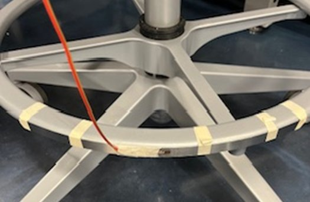
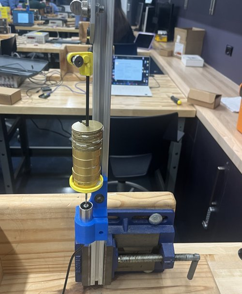
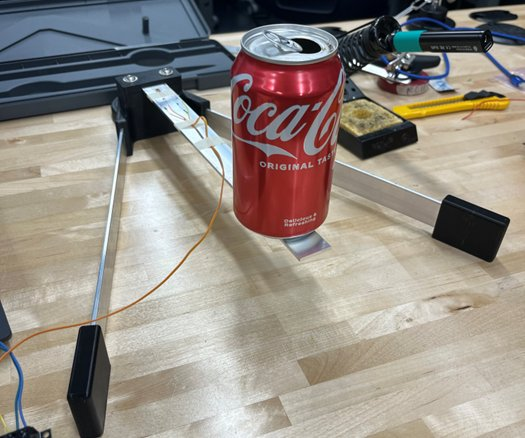
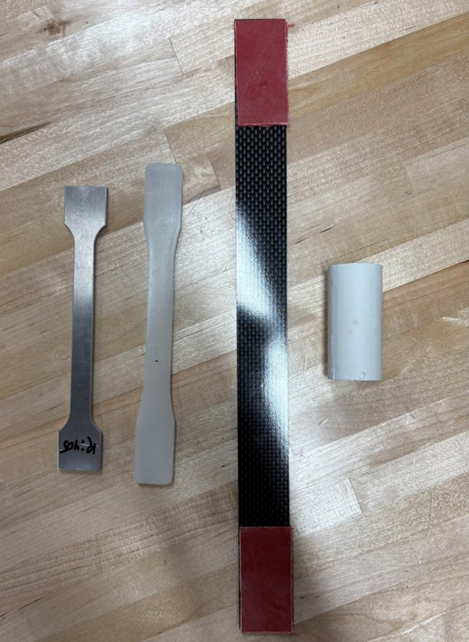
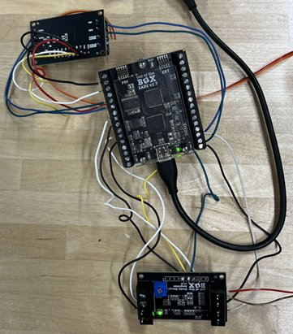

This experiment explored digital data acquisition, resolution limits, and uncertainty by measuring the radius of the footrest of a lab stool using three methods. These methods included using a Wheatstone bridge voltage, an amplified voltage, and a manual measuring tape. For the first two methods, a SADI 2.7 DAQ recorded data from a strain gauge through a LABview program which required careful selection of ADC sample windows to optimize resolution and avoid saturation. The third method measured the circumference of the footrest with a tape measure and used a hand calculation to find the radius. The methods using the Wheatstone bridge voltage and amplified voltage yielded radius results of 251.79 ± 39.00 mm and 250.06 ± 22.58 mm, respectively, while the tape measure method recorded a radius of 254.33 ± 0.0796 mm. Despite the similar accuracy of these results, the strain gauge methods were much less precise due to a larger stack up of uncertainties from multiple sources, sensor noise, and potential other issues.

This experiment utilized load-controlled tensile testing to analyze the stress-strain relationship of annealed 32 AWG copper wire. The wire was secured to a loading apparatus with a hanger suspended from the bottom, featuring a metal core that displaced into a linear variable differential transducer (LVDT). Brass slotted weights were incrementally loaded, generating a differential voltage sent to LabVIEW via a SADI 2.7 DAQ, which was converted to elongation using a calibration constant. A short wire was tested to determine ultimate tensile strength and a long wire was tested to analyze the elastic region and yield stress. Results yielded a modulus of elasticity of 66.16 ± 17.94 GPa, a yield stress of 102.16 MPa, an offset yield point stress of 110.49 MPa, and an ultimate tensile strength of 229.72 ± 0.573 MPa. Discrepancies from known copper properties were attributed to wire slip, creep, and human measurement errors, with proposed improvements including better clamping, more precise length measurements, and temperature control.

This experiment utilized a cantilever beam instrumented with a strain gauge to measure the weight of a soda can using two different methods. The strain gauge was wired to a Wheatstone Bridge and amplifier that converted resistance changes into amplified voltages measured by a DAQ and sent to LabVIEW. The beam scale method relied on mechanics of materials principles while the calibration method used a constant relating voltage change to weight. After ten initial measurements, the beam scale method recorded a mean weight of 4.01 ± 0.15 N while the calibration method recorded 3.77 ± 0.14 N. Compared to a digital scale reading of 3.7905 ± 0.0005 N, the calibration method proved more accurate. A gulp experiment incrementally emptied the can over thirteen gulps, with mean gulp sizes of 0.28 ± 0.16 N and 0.26 ± 0.15 N for the two methods respectively. While more accurate, the calibration method was not found to be more precise in the gulp experiment.

In this experiment, a Universal Testing Machine (UTM) was used to perform displacement controlled tensile and compressive tests on four specimens: an unknown metal, biaxial carbon fiber, nylon 6/6, and plaster of paris. An extensometer directly measured strain for the unknown metal while the remaining specimens used extension measurements with machine stiffness compensation. Material properties including yield stress, ultimate stress, breaking stress, percent elongation, density, specific strength, and specific stiffness were calculated for each specimen. A plastic model was also developed for the unknown metal to determine its strength coefficient and strain hardening exponent. Results showed the biaxial carbon fiber had the highest specific strength at 0.7886 (MPa)m³/kg and the unknown metal the highest specific stiffness at 27.996 ± 2.395 (MPa)m³/kg. Through uncertainty analysis and comparison of its modulus of elasticity of 66.528 ± 4.289 GPa to known materials, the unknown metal was identified as aluminum 6061-T6.

This experiment measured the change in internal pressure of a soda can before and after exposure to the atmosphere using two methods. The first utilized two strain gauges placed orthogonally along the principal axis of the can to capture pressure changes associated with both hoop and longitudinal stress. Voltage changes from each gauge were used to determine strain, which was then used to calculate stress and corresponding pressure changes. The second method measured the diameter of the can before and after opening to calculate pressure change. Results yielded pressure changes of PL = 405.29 ± 12.15 kPa from the longitudinal gauge, PH = 499.98 ± 14.98 kPa from the hoop gauge, and PD = 674.42 ± 101.05 kPa from the diameter method. An uncertainty analysis confirmed the strain gauge method to be more precise than the diameter measurement method.
